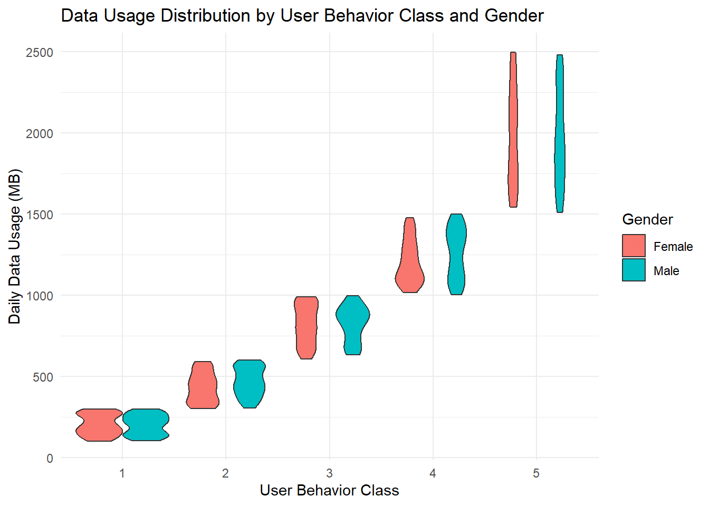

# Load required libraries
library(tidyverse)── Attaching core tidyverse packages ──────────────────────── tidyverse 2.0.0 ──
✔ dplyr 1.1.4 ✔ readr 2.1.5
✔ forcats 1.0.0 ✔ stringr 1.5.1
✔ ggplot2 3.5.1 ✔ tibble 3.2.1
✔ lubridate 1.9.3 ✔ tidyr 1.3.1
✔ purrr 1.0.2
── Conflicts ────────────────────────────────────────── tidyverse_conflicts() ──
✖ dplyr::filter() masks stats::filter()
✖ dplyr::lag() masks stats::lag()
ℹ Use the conflicted package (<http://conflicted.r-lib.org/>) to force all conflicts to become errorslibrary(ggplot2)
library(gridExtra)
Attaching package: 'gridExtra'
The following object is masked from 'package:dplyr':
combine# Read the data
data <- read.csv("C:\\Users\\upnjo\\OneDrive\\Documents\\Project2\\user_behavior_dataset.csv")
# 1. One-way contingency tables
cat("One-way Contingency Tables:\n")One-way Contingency Tables:cat("\nDevice Model Distribution:\n")
Device Model Distribution:print(table(data$Device.Model))
Google Pixel 5 iPhone 12 OnePlus 9 Samsung Galaxy S21
142 146 133 133
Xiaomi Mi 11
146 cat("\nOperating System Distribution:\n")
Operating System Distribution:print(table(data$Operating.System))
Android iOS
554 146 cat("\nUser Behavior Class Distribution:\n")
User Behavior Class Distribution:print(table(data$User.Behavior.Class))
1 2 3 4 5
136 146 143 139 136 # 2. Two-way contingency tables
cat("\nTwo-way Contingency Tables:\n")
Two-way Contingency Tables:cat("\nDevice Model by Operating System:\n")
Device Model by Operating System:print(table(data$Device.Model, data$Operating.System))
Android iOS
Google Pixel 5 142 0
iPhone 12 0 146
OnePlus 9 133 0
Samsung Galaxy S21 133 0
Xiaomi Mi 11 146 0cat("\nUser Behavior Class by Gender:\n")
User Behavior Class by Gender:print(table(data$User.Behavior.Class, data$Gender))
Female Male
1 63 73
2 64 82
3 82 61
4 67 72
5 60 76# 3. Numerical summaries by categorical variables
# Function to calculate summary statistics
# First, let's see the actual column names in your data
names(data) [1] "User.ID" "Device.Model"
[3] "Operating.System" "App.Usage.Time..min.day."
[5] "Screen.On.Time..hours.day." "Battery.Drain..mAh.day."
[7] "Number.of.Apps.Installed" "Data.Usage..MB.day."
[9] "Age" "Gender"
[11] "User.Behavior.Class" # Modify the function to handle column names with spaces
# Function with correct column names
get_summary_stats <- function(data, group_var, numeric_var) {
data %>%
group_by(!!sym(group_var)) %>%
summarise(
Mean = mean(!!sym(numeric_var)),
Median = median(!!sym(numeric_var)),
SD = sd(!!sym(numeric_var)),
Min = min(!!sym(numeric_var)),
Max = max(!!sym(numeric_var))
)
}
# Print summaries using exact column names from your data
cat("\nApp Usage Time Summary by Device Model:\n")
App Usage Time Summary by Device Model:print(get_summary_stats(data, "Device.Model", "App.Usage.Time..min.day."))# A tibble: 5 × 6
Device.Model Mean Median SD Min Max
<chr> <dbl> <dbl> <dbl> <int> <int>
1 Google Pixel 5 268. 232. 180. 34 595
2 OnePlus 9 270. 216 183. 30 598
3 Samsung Galaxy S21 266. 217 175. 30 593
4 Xiaomi Mi 11 268. 217 180. 31 597
5 iPhone 12 282. 258. 170. 32 597cat("\nBattery Drain Summary by Operating System:\n")
Battery Drain Summary by Operating System:print(get_summary_stats(data, "Operating.System", "Battery.Drain..mAh.day."))# A tibble: 2 × 6
Operating.System Mean Median SD Min Max
<chr> <dbl> <dbl> <dbl> <int> <int>
1 Android 1508. 1489 820. 302 2993
2 iOS 1590. 1538. 817. 308 2971# For other variables
cat("\nScreen Time Summary by Device Model:\n")
Screen Time Summary by Device Model:print(get_summary_stats(data, "Device.Model", "Screen.On.Time..hours.day."))# A tibble: 5 × 6
Device.Model Mean Median SD Min Max
<chr> <dbl> <dbl> <dbl> <dbl> <dbl>
1 Google Pixel 5 5.08 4.75 3.10 1.1 11.8
2 OnePlus 9 5.24 4.7 3.08 1.1 12
3 Samsung Galaxy S21 5.32 5 3.08 1 11.8
4 Xiaomi Mi 11 5.29 4.9 3.15 1.1 11.9
5 iPhone 12 5.43 5.05 2.97 1 11.9cat("\nData Usage Summary by Device Model:\n")
Data Usage Summary by Device Model:print(get_summary_stats(data, "Device.Model", "Data.Usage..MB.day."))# A tibble: 5 × 6
Device.Model Mean Median SD Min Max
<chr> <dbl> <dbl> <dbl> <int> <int>
1 Google Pixel 5 898. 791 644. 105 2481
2 OnePlus 9 911. 828 621. 103 2477
3 Samsung Galaxy S21 932. 861 646. 109 2481
4 Xiaomi Mi 11 940. 820. 671. 102 2497
5 iPhone 12 966. 907 625. 111 2416# 4. Visualizations
# Plot 1: Density plot of App Usage Time by Operating System
p1 <- ggplot(data, aes(x = App.Usage.Time..min.day., fill = Operating.System)) +
geom_density(alpha = 0.5) +
labs(title = "App Usage Time Distribution by OS",
x = "Daily App Usage (minutes)",
y = "Density") +
theme_minimal()
print(p1)# Plot 2: Scatter plot with correlation between Battery Drain and Screen Time
p2 <- ggplot(data, aes(x = Screen.On.Time..hours.day.,
y = Battery.Drain..mAh.day.,
color = Operating.System)) +
geom_point(alpha = 0.6) +
geom_smooth(method = "lm", se = FALSE) +
facet_wrap(~Device.Model) +
labs(title = "Battery Drain vs Screen Time by Device",
x = "Screen Time (hours/day)",
y = "Battery Drain (mAh/day)") +
theme_minimal() +
theme(axis.text.x = element_text(angle = 45))
print(p2)`geom_smooth()` using formula = 'y ~ x'# Plot 3: Violin plot of Data Usage by User Behavior Class
p3 <- ggplot(data, aes(x = as.factor(User.Behavior.Class),
y = Data.Usage..MB.day.,
fill = Gender)) +
geom_violin() +
labs(title = "Data Usage Distribution by User Behavior Class and Gender",
x = "User Behavior Class",
y = "Daily Data Usage (MB)") +
theme_minimal()
print(p3)
# Plot 4: Hexbin plot of App Usage vs Number of Apps
p4 <- ggplot(data, aes(x = Number.of.Apps.Installed,
y = App.Usage.Time..min.day.)) +
geom_hex(bins = 30) +
facet_wrap(~Operating.System) +
scale_fill_viridis_c() +
labs(title = "App Usage vs Number of Apps Installed",
x = "Number of Apps Installed",
y = "Daily App Usage (minutes)") +
theme_minimal()
print(p4)
# Plot 5: Stacked bar plot of User Behavior Class distribution by Device
p5 <- ggplot(data, aes(x = Device.Model, fill = as.factor(User.Behavior.Class))) +
geom_bar(position = "fill") +
labs(title = "User Behavior Class Distribution by Device",
x = "Device Model",
y = "Proportion",
fill = "Behavior Class") +
theme_minimal() +
theme(axis.text.x = element_text(angle = 45, hjust = 1))
print(p5)# Plot 6: Age distribution by Gender and OS
p6 <- ggplot(data, aes(x = Age, fill = Gender)) +
geom_histogram(position = "dodge", bins = 30, alpha = 0.7) +
facet_wrap(~Operating.System) +
labs(title = "Age Distribution by Gender and Operating System",
x = "Age",
y = "Count") +
theme_minimal()
print(p6)# Display all plots in a grid
grid.arrange(p1, p2, p3, p4, p5, p6, ncol = 2)`geom_smooth()` using formula = 'y ~ x'